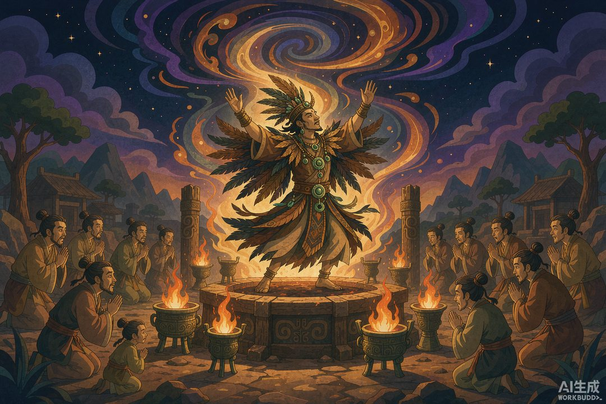
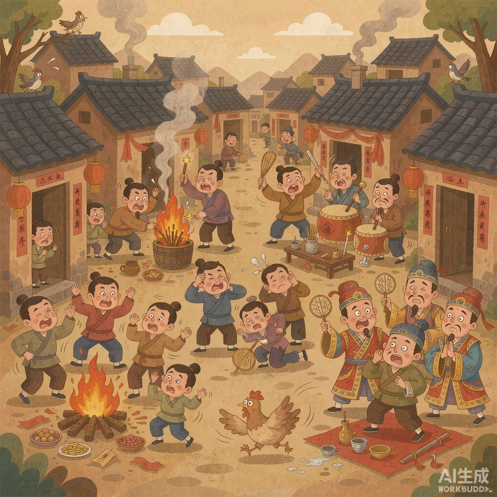
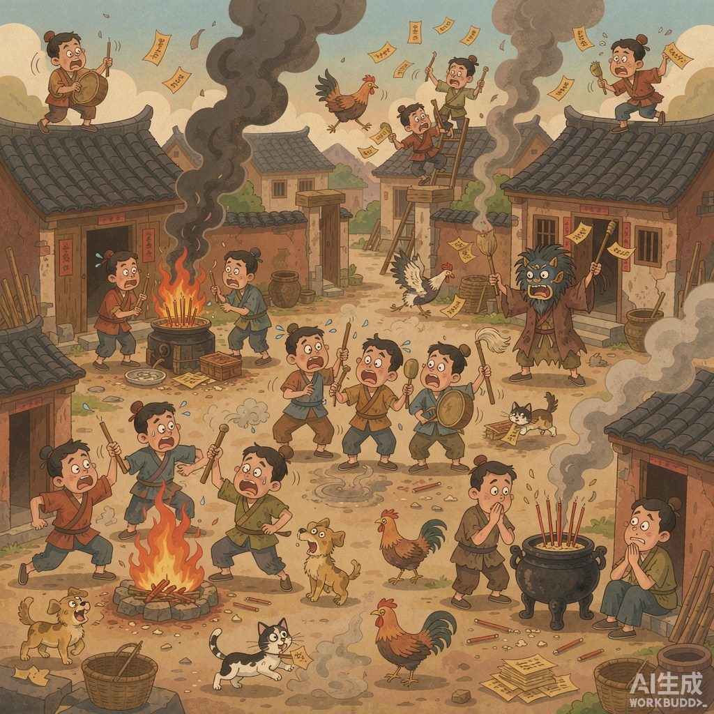

|
《信息传播那些事儿》· 卷一 · 07 |
|
巫师：上古"意见领袖" —— 谁垄断了"人—神"这条频道，谁就垄断了标准答案 |

▲ 上古唯一持证上岗的"信号塔"（AI 生成示意图）
|
前面几篇讲的都是"人跟人怎么传消息"。这一篇讲一条更古老的频道：人跟神。 |
先想象一个场景：上古时期，你家要盖房，去问神；要出远门，去问神；孩子生病，去问神。而"问神"这件事，你不需要找谁批准——自己在家烧堆火、跳个舞、念念有词，就算接通了。
这不是编的。《国语·楚语下》记载，上古曾经"民神杂糅"："夫人作享，家为巫史"——人人自己祭祀，家家自设巫师。用今天的话说：每家每户都是"自媒体"，人人手里有一个直连上天的账号。
一 | 巫师：上古最强"知识博主" |
当然，多数人自己跳大神水平一般，真正职业化的通神者叫"巫"（女性）和"觋"（男性）。按《国语》的标准，这行门槛极高：天资聪颖、心志专一、视听过人，"如是则明神降之"——神才会附体。
更重要的是，巫师绝不止"通灵"这一个技能点。上古的巫、史不分家：他们观天象（天文台）、定历法（气象局）、记大事（档案馆）、管医药（医院）、主持祭祀（教堂）。一个部落里最有文化、最博学、最会讲故事的人，几乎清一色是巫师。
翻译成现代概念：巫师是部落里的顶流意见领袖 + 官方发言人 + 首席科学官，三合一。他们生产的信息有一条铁律——不可证伪。他说神说了什么，你没法找神对质。
记住这一点，这是巫师权力的全部秘密。
二 | 人人通神，神就不值钱了 |
但"家家为巫史"的自由市场，很快出了问题。《国语》记录了当时的乱象："烝享无度，民神同位"——祭祀没完没了，家家穷得底掉，捞不着一点好处；神被请得太多，威严扫地。

▲ 全民直播的代价：频道严重过载（AI 生成示意图）
于是，中国神话里最有历史感的一次"改革"登场了。颛顼帝下令："绝地天通"——命南正重专门管天、负责跟神对接，命火正黎专门管地、负责跟人打交道。从此，天地各归各，想跟神说话？只有持证机构可以。
注意，"绝地天通"不是彻底断掉人神联系，而是把这条频道收归垄断。学者们普遍认为：垄断了通天权，也就垄断了世俗统治权——因为神不再属于各氏族自己，而成了由官方统一"转播"的更高信仰。首领说神同意，就是神同意。

▲ 通天通道，官方独营（AI 生成示意图）
三 | 史上第一次"信息牌照制度" |
把这件事放进本系列的主线看，意义重大：
烽火台管的是"信号"，鼓语管的是"编码"，而绝地天通管的是"资质"——谁有资格发布。这是人类第一次意识到：与其去堵每一条消息，不如直接控制谁握有话筒。
这个模式的后代你都很熟悉：中世纪教会垄断《圣经》解释权，平民不许私自读经；英国王室给印刷商发"特许状"，没有牌照不准办报；后来的出版许可、频道牌照、新闻准入……全是"绝地天通"的迭代版本。权力管信息的首选打法，四千多年没换过思路：管源头，先管人。
而被管住的那一方——巫师们——看似风光，实则被自己的资质绑死了：他们必须永远"神准"，一次穿帮就可能身败名裂。上古意见领袖的焦虑，和今天大 V 的焦虑，隔着四千年遥遥相望。
📌 本篇数字锚点 | ||||||||||
|
|
🔔 下篇预告 |
本篇转引自《国语·楚语下》"观射父论绝地天通"及《尚书·吕刑》相关研究；学界对"绝地天通"的解释存在多种观点，本篇取其中流传较广的一种；配图为 AI 生成示意图。